Історичні фотографії
Фотоархів Дубровиці
Унікальна колекція історичних фотографій міста з різних періодів. Натисніть на фото для збільшення.
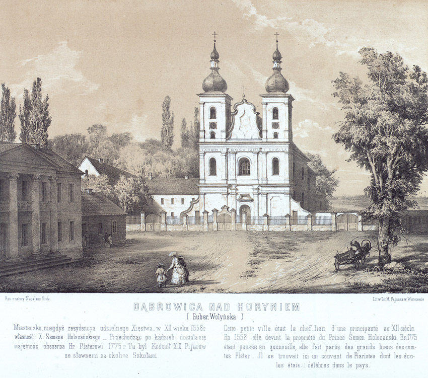
Наполеон Орда. «Костел Іоанна Хрестителя», 1870 рік
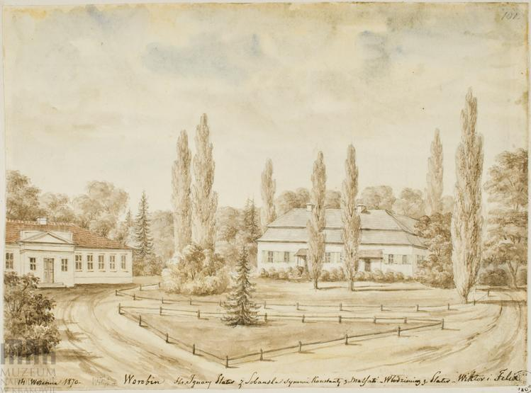
Наполеон Орда. «Двір Плятера», 1870 рік
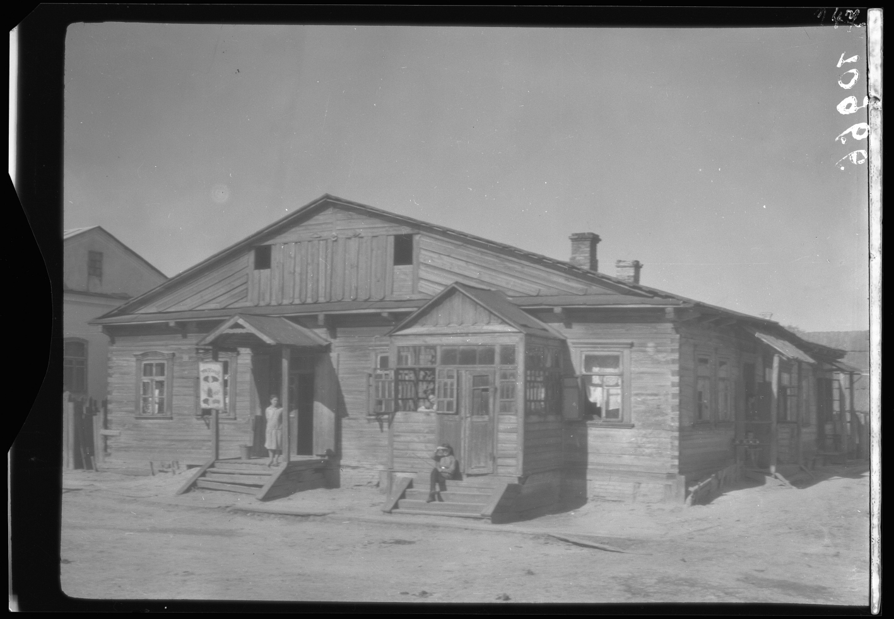
Дубровиця, корчма, 1929 рік
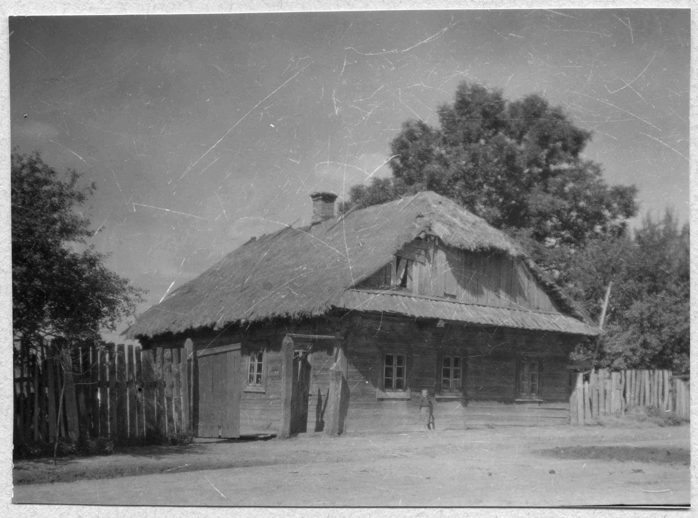
Дубровиця, дерев'яна хата, 1929 рік

Дубровиця, дерев'яна хата, 1929 рік
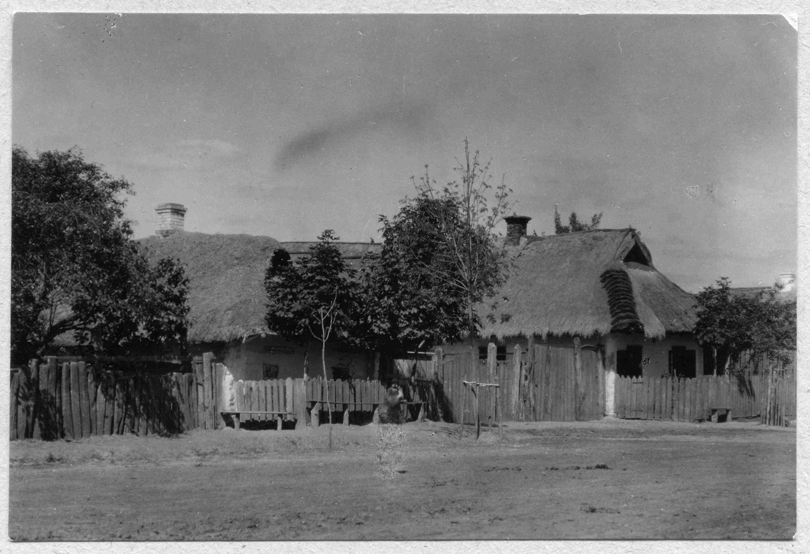
Дубровиця, дерев'яна хата, 1929 рік
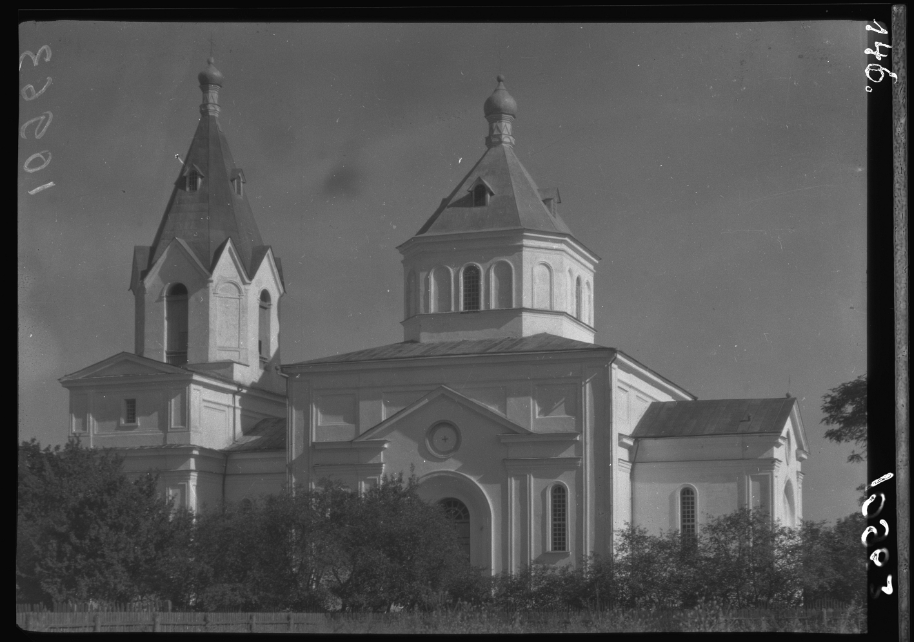
Церква Пресвятої Богородиці, 1929 рік
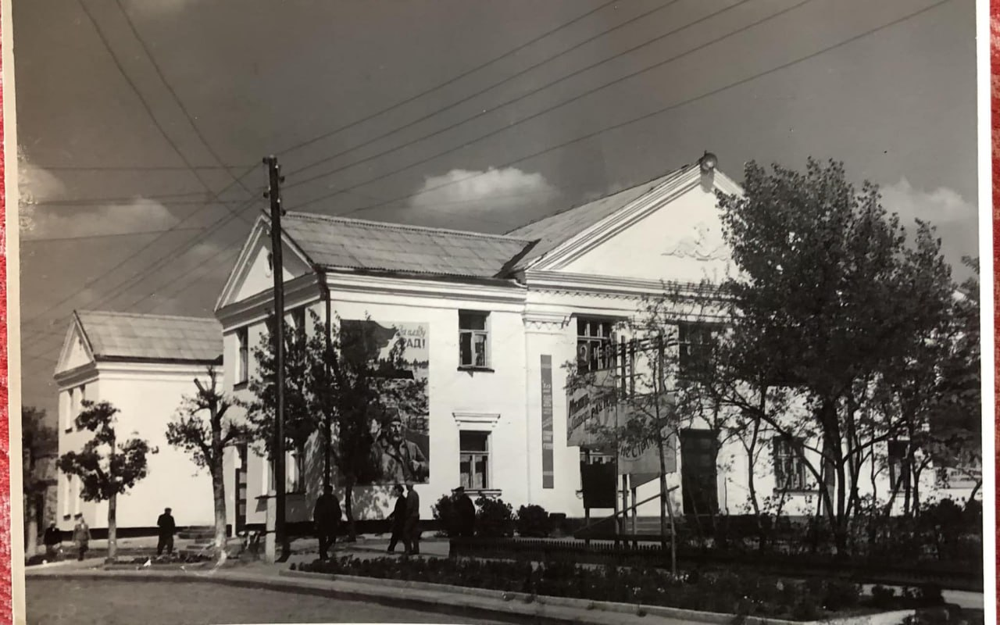
Дубровицький Районний Будинок культури
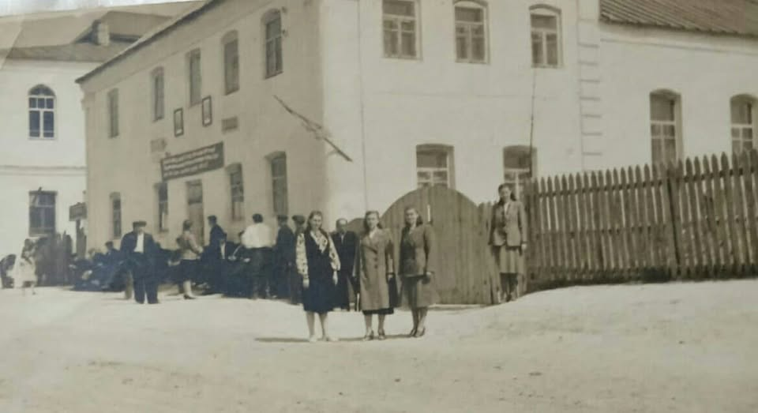
День першого травня Дубровиця 1953 рік. Мала та велика(позаду) Синагоги
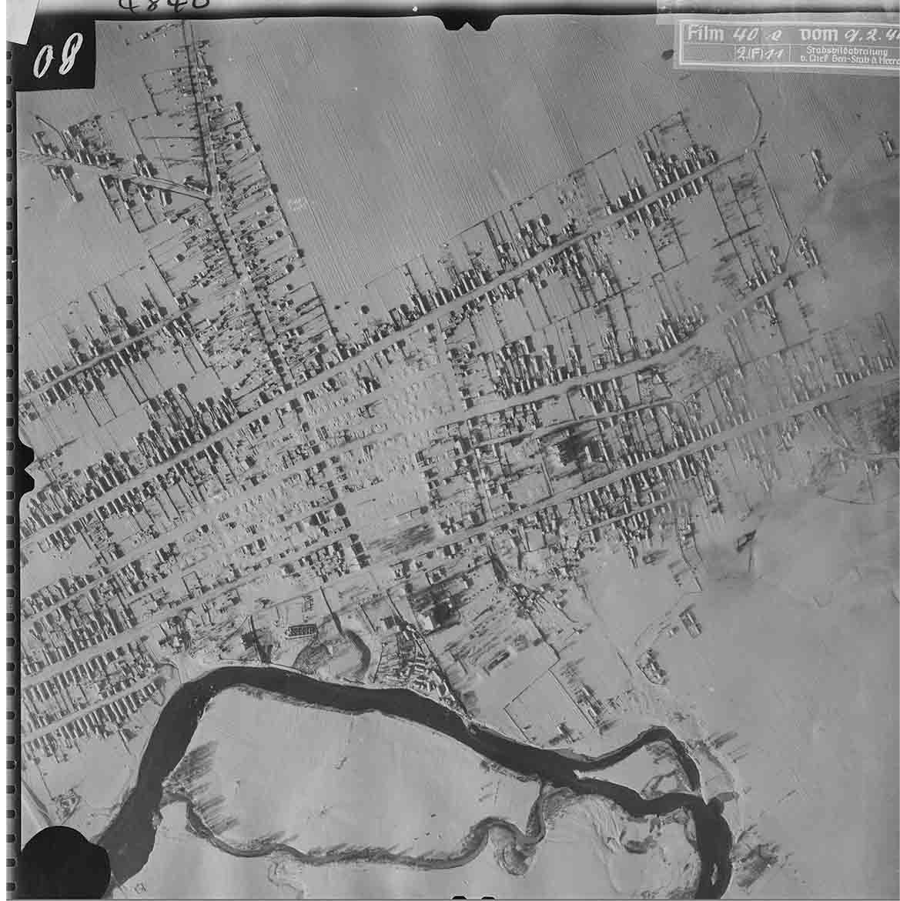
Аерофотозйомка Люфтваффе, 1944 рік
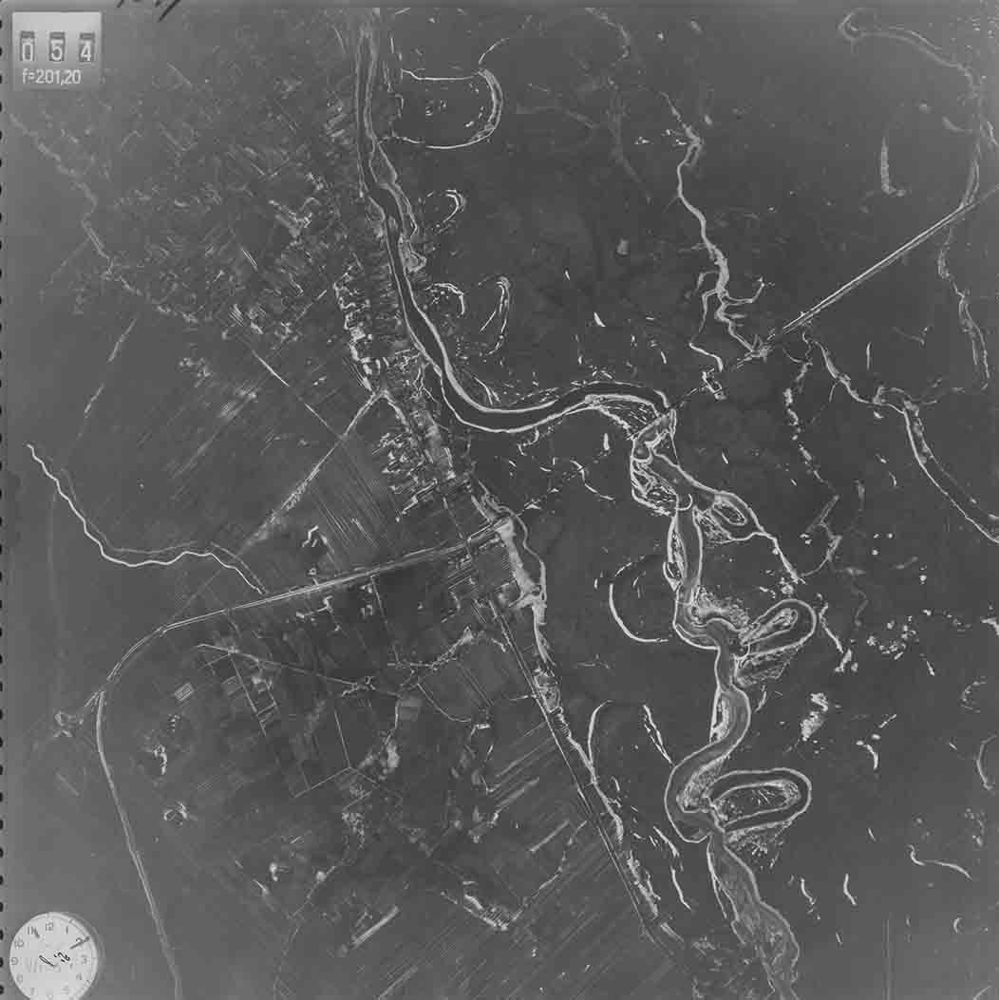
Аерофотозйомка Люфтваффе, 1944 рік
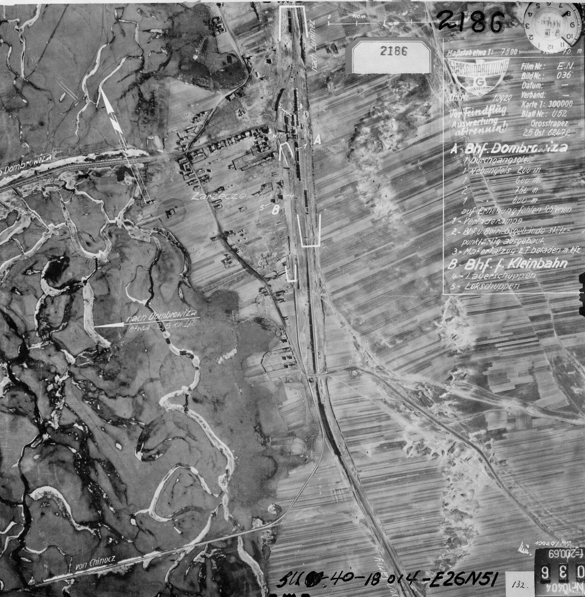
Аерофотозйомка Люфтваффе, Станція Дубровиця, 1942 рік
Маєте історичні фотографії Дубровиці?
Ми будемо раді поповнити наш архів вашими матеріалами. Кожна фотографія — це частина історії, яку важливо зберегти для майбутніх поколінь.
Зв'язатися з нами